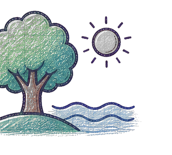
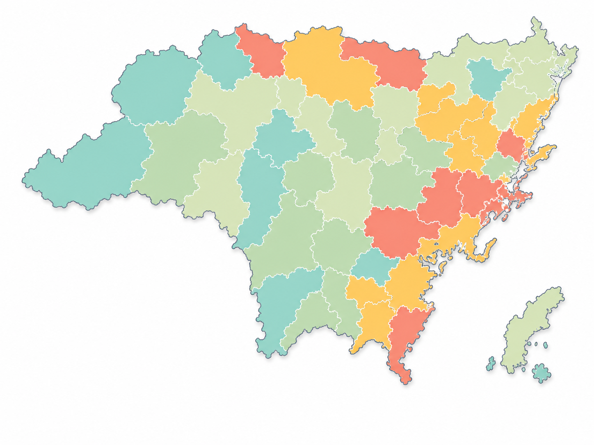

SignalTrendChangeStatus
The story stays with the person.
The pattern can travel.
After validation, providers see the shape of a shared barrier, and a sharper question to ask about it. Individual records never leave the person they belong to.
A person asks Starbound a question in their own words.
Cost pressure34%
Income29%
Caring load27%
Gender + identity14%
Culture23%
Healthcare access26%
Education16%

Travel19%
Low capacity31%
Housing24%
Food access28%
Hidden<20 people
Patterns become visibleCircle size shows how often a context appears, not individual risk.
This shows how the privacy model is meant to work. It's a mock-up, not a live pipeline. Production would still need real consent flows, governance, suppression and security built underneath it.
Provider analytics
Community signal workspace
Ready to exploreKeep watching
Emerging signals
What needs attention?
Prioritised patterns that have met enough checks to review, or need more time.
Ready to explore 3Keep watching 5
Ready to explore · illustrative+24%
Free and confidential support questions are rising before urgent and after-hours questions.
Cost, privacy and service access appear repeatedly across the related health-question groups.
Free + confidential supportUrgent + after-hours support
Validation5 / 5 checks passed
✓ Privacy
✓ Persistence
✓ Corroboration
✓ Equity
Planning question
Why are more young people seeking free and confidential support before urgent help?
Selected signalFree and confidential mental-health support
- TrendsDetect
- DriversExplore
- PopulationReview
- ResponsePlan
03 / Signal Distribution
Where are these drivers most visible?
See how the selected signal and its associated drivers vary across areas and cohorts.
Illustrative
not real data
not real data
View by
Select an outlined area on the map

StableManagingStretchedSurvival
Select an outlined area to inspect its illustrative cohort.
02 / What’s Driving It
Choices versus chances
The eight-week signal change is attributed across structural conditions and behavioural patterns. Select a side, then inspect a driver.
Share of eight-week signal change
Illustrative contribution modelMost signal growth tracks to chances.
Cost, confidentiality and service availability are moving faster than individual behaviour patterns in this cohort.
Conditions around access61% Chances
DriverTypeContributionChange
Selected driver · Chance
Cost pressure
Requests for free, bulk-billed or no-cost support appear across three sufficiently large health-question groups.
Planning questionCould clearer no-cost pathways reduce friction at first contact?
A support pathway cannot help if it feels unaffordable, visible or out of reach.
Early movement detected
Emerging signal
Questions about free and confidential mental-health support are rising.
Searches for affordable, private support rose 24% over eight weeks among 16-24 year-olds in North River. Urgent and after-hours searches began rising three weeks later.
Change · 8 weeks+24%
Time window8 weeks
Focus cohortYouth 16-24
Geographic scopeNorth River
StatusReady to explore
Free + confidential supportUrgent + after-hours support
Week 8 · Ready to exploreAccess questions are 24% above baseline; urgent-support questions are 16% above baseline.
Ready to explore+0%
Urgent-support searches are now 16% above baseline.
Two independent health-support signal groups are moving in sequence. This is worth investigating; it does not show that the same people made both searches or that one caused the other.
Why should you trust this signal?
5 checks passedSelected evidence · Privacy threshold
842 consented contributions are included. The minimum publishable cohort is 20; no individual record is available.
Keep watching+12%
Questions about confidential care are broadening.
“Can I talk to someone without my parents knowing?” now appears across three sufficiently large cohorts.
Keep watching+9%
Cost is shaping the type of help people seek.
More questions ask for free psychologists, bulk-billed care or support without a Medicare card.
04 / Plan a Response
Turn a pattern into a question, not a prescription.
This pattern is worth investigating, not acting on alone.
Selected signalFree and confidential support questions are rising before urgent and after-hours questions.
Planning questionCould clearer no-cost, confidential pathways reduce friction at first contact?
What changed
SIG-2417
Access-related questions rose first; urgent and after-hours questions followed three weeks later.
EvidenceSIG-2417
What we know
Observational
The pattern persists across eight weeks, appears in sufficiently large cohorts and passes five validation checks.
MethodObservational
What remains unknown
Medium
Why the pattern is occurring locally, whether information friction is a driver, and which pathways would reduce drop-off.
UncertaintyMedium
Question worth investigatingCould clearer no-cost, confidential pathways reduce friction at first contact?
Response ladder
Expand a stage to inspect or adapt itProgress through small, reversible steps.
Timeframe1-2 weeks
Success measurePattern confirmed or not
If this pattern persists
Compare the aggregate signal with referral themes, wait-time movement and partner observations.
We would watch
Whether local evidence supports the same access and confidentiality pattern.
Stop or adapt if
The movement is not present locally or relies on a suppressed cohort.
Timeframe2-4 weeks
Success measureShared priorities recorded
If this pattern persists
Test whether cost, privacy and availability match what young people and services hear locally.
We would watch
Agreement, disagreement and missing perspectives across partner groups.
Stop or adapt if
The planning question does not reflect lived experience or local service context.
Timeframe6-12 weeks
Success measureReach, uptake and drop-off
We could test
Clearer information about no-cost, confidential entry points across one service pathway.
We would watch
First-contact completion, appropriate uptake and unintended access barriers.
Stop or adapt if
Access worsens, inequity increases or the change creates new confusion.
Timeframe8-16 weeks
Success measureEvidence informs next step
We would compare
Signal movement, pathway uptake and service data against the pre-test baseline.
We would watch
Whether improvement is consistent across areas and sufficiently large cohorts.
Stop or adapt if
The response is not helping, cannot be evaluated or produces uneven effects.
Tailored walkthrough
See what this could reveal in your region.
We can configure a private walkthrough around your population, service model and reporting needs, without exposing individual young people.
STARBOUND / PROVIDER WORKSPACEFictional aggregate data
Decision brief · SB-047
Cost pressure is changing how people seek care
Requests for options that avoid another paid product, appointment or trip have remained elevated for nine weeks.
Ready to explore86%validation confidence
+11 ptscompared with the previous 90 days
4 service areas meet the minimum cohort and equity checks.
- Privacy
- 842 contributions
- Persistence
- 9 of 12 weeks
- Corroboration
- 3 signal types
- Equity review
- 4 areas checked
Cost repeatedly appears alongside requests for delayed, free or lower-friction care options.
That cost caused an outcome or that every person in this community experiences the same barrier.
Could the first contact offer one clearly identified no-cost pathway?
| Signal | 12-week trend | Change | Confidence | Coverage | Status |
|---|
Only aggregate groups meeting the minimum threshold appear.
Community planning board
Explore patterns by service area
Select a coloured hub to see the planning context, not individual searches.
Meets thresholdCommunity review needed
STARBOUND / VALIDATIONSB-047 · FICTIONAL DATA
Signal strength over timeLast 12 weeks
This periodPrevious period
Signals changing nowCompared with previous period
SELECTED SIGNAL / VALIDATIONSB-047
Ready to explore
Cost pressure is changing how people seek care
People are more often asking for options that avoid a new appointment, paid product or extra trip.
What we can say
Cost is repeatedly appearing alongside delayed or lower-friction care preferences in this cohort.
What we cannot say
That cost caused a particular health outcome, or that every person in this community has the same barrier.
Service journeyOverall · last 90 days
All signalsCostTravelCare
Search100%8,420 people
↓ 28%Answer72%6,050 people
↓ 31%Next step41%3,450 people
↓ 18%Connected support23%1,930 people
Journey trendStage retention · last 12 weeks
What we can say
Friction is concentrated between receiving an answer and completing a next step.
What we cannot say
That one barrier caused every drop-off or that all people follow the same pathway.
Catchment overviewSignal strength by determinant · fictional areas
MapList
Segment summaryCompared with previous period
| Signal | Trend | Change |
|---|---|---|
| Cost pressure | ⌁⌁⌁ | ↑ 11 pts |
| Caring load | ⌁⌁ | ↑ 7 pts |
| Low capacity | ⌁⌁⌁ | ↑ 4 pts |
| Travel barriers | ⌁⌁ | ↑ 2 pts |
Signal mixShare of aggregate activity
36%24%18%14%8%
What we can say
Cost and travel signals are stronger in several overlapping service areas.
What we cannot say
That map intensity represents individual risk or a causal relationship.
From signal to service question
Make the pattern discussable.
Co-occurring contextNot a causal model
“Where could we remove a cost, travel or appointment step from the first contact?”